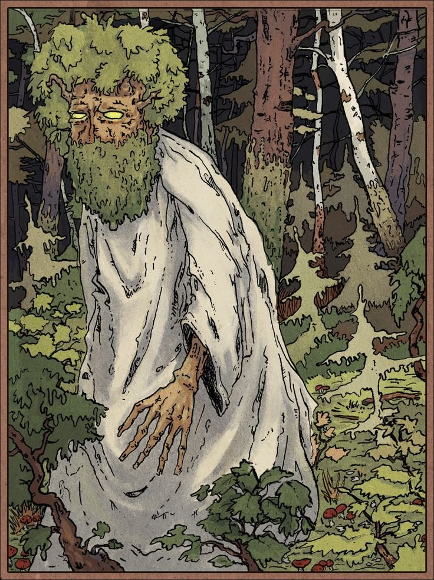
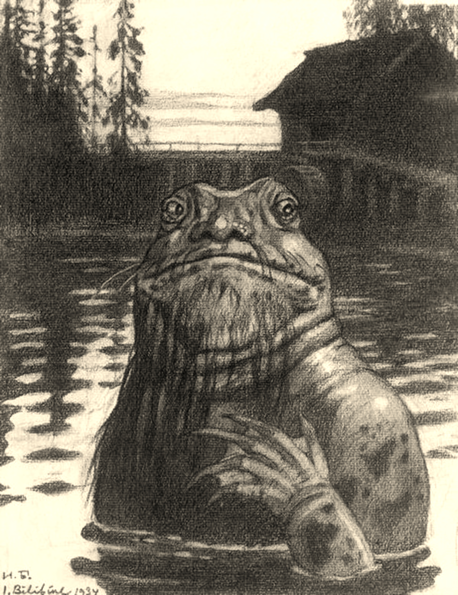
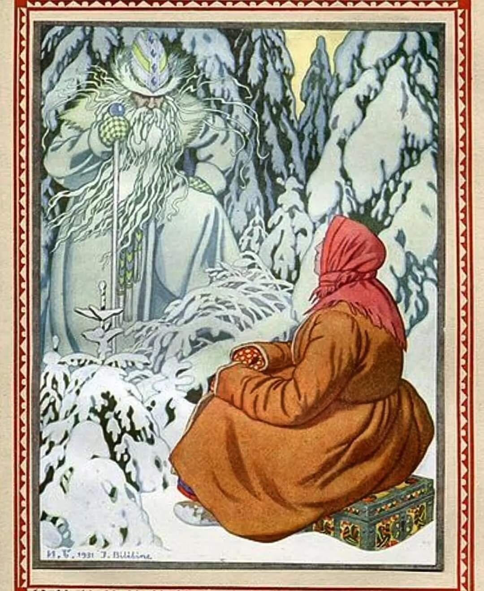

Fig.1 - Forest Spirit (Leshii, Леший, artist Ivan Bilibin)

Fig.2 - Water Spirit (Vodianoi, водяной, artist Ivan Bilibin 1934) Note he lives next to a water mill.
Linda Ivanits writes that millers were considered to be sorcerers-like characters in communication with water spirits.
Bilibin made this illustration to the project Mythologie generale. Fascicule 16–17. Paris: Larousse, 1934.„Mythologie slave“. 1934.

Fig.3 - Jack Frost (Morozko, Морозко, artist Ivan Bilibin 1932) Note he is a threatening nature spirit that needs to be placated. He is not a benign Santa character.